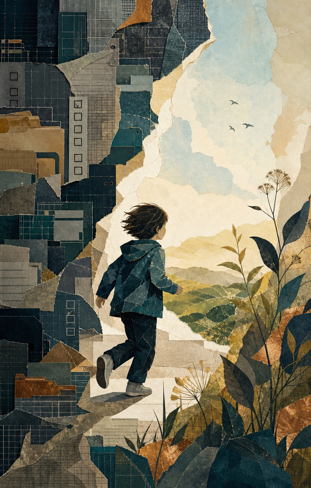
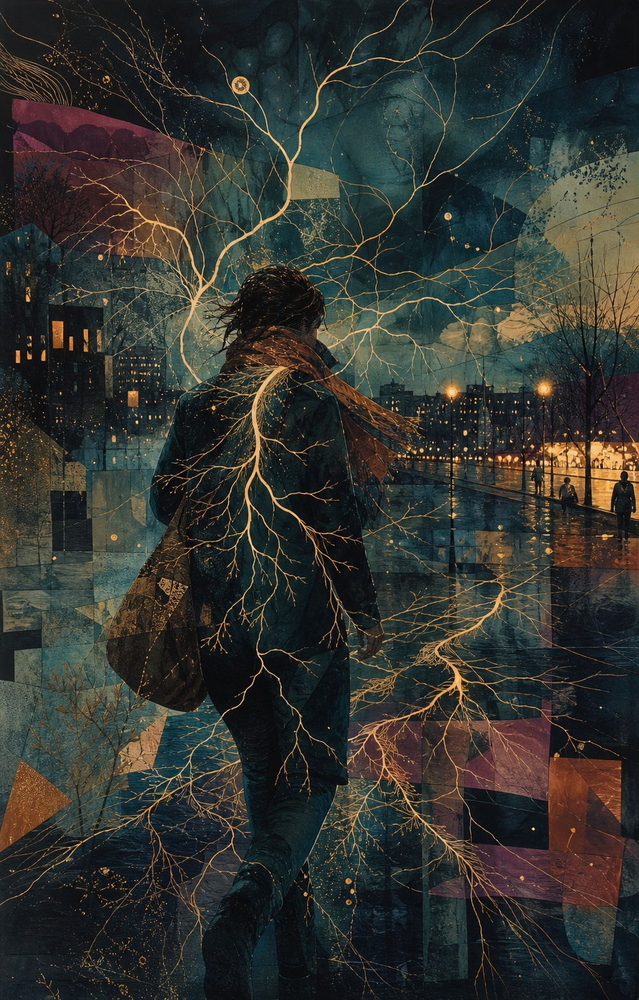

Geen goeroes of definitieve mensformules, wel bronnen, twijfel en verschillende stemmen.
De Onwijze Wijsheden · Atlas · Menslab · Denkstukken
Leer de mens begrijpen. Begin bij jezelf.
Een Nederlandstalige ontdekplek met psychologisch onderzoek in gewone taal, eerlijke verhalen en kleine oefeningen — voor wie wil begrijpen wat ons vormt en wat er kan veranderen.
Begin bij: trauma neuroplasticiteit emotieregulatie bewustzijn
Geen eindpunt voor de waarheid. Wel een uitnodiging om scherper, zachter en nieuwsgieriger te kijken.
Welkom bij De Onwijze Wijsheden
Een plek voor wat een mens weet, voelt én nog niet begrijpt.
De Onwijze Wijsheden brengt wetenschap, menselijke ervaring, filosofie en speels zelfonderzoek bij elkaar. Niet alsof ze hetzelfde soort bewijs leveren, maar omdat ze samen andere kanten van een mens zichtbaar maken.
De naam is bewust een beetje scheef. Wat vandaag wijs klinkt, kan morgen nuance nodig hebben. Wat eerst onzin lijkt, kan een goede vraag verbergen. Daarom maken we steeds zichtbaar wat stevig onderzocht is, wat iemand persoonlijk ervaart en wat voorlopig alleen een hypothese blijft.
Een wild idee krijgt ruimte zolang we duidelijk zeggen waar bewijs ophoudt en verbeelding begint.
Lezen kan uitmonden in een vraag, een gesprek of een klein veilig experiment.
Uitgelicht
Onderzoek, ervaring en verandering.

Maatschappijkritiek · Denkstuk
Een kind is geen dossier
Over trauma, opvoeding en wat er gebeurt wanneer een systeem het papier beter ziet dan het kind.

Persoonlijke ervaring
Het zenuwstelsel dat niet stilzit
Over ADHD, eenzaamheid, overleven en het verlangen om werkelijk ergens te mogen zijn.

∞ Nieuw in de Atlas · 18 juli 2026
Hechting
Hechting zonder levenslang vonnis: geen vast type uit je jeugd, maar een veranderlijk netwerk van verwachtingen, relaties, cultuur en nieuwe ervaringen.
Nieuwsgierig én eerlijk
Niet alles hoeft hetzelfde soort waarheid te zijn.
Onderzoek, ervaring en filosofie kunnen naast elkaar bestaan wanneer we duidelijk maken door welke bril je leest.
Psychologische kennis wordt begrijpelijk zonder haar stelliger of eenvoudiger te maken dan ze is.
Een persoonlijk verhaal is geen bewijs, maar kan wel herkenning, betekenis en nieuwe vragen brengen.
Het Menslab vertaalt lezen naar reflectie, kleine experimenten en gesprekken met anderen.
Vier werelden
Begrijp. Probeer. Verwoord. Vind verder.
01 · Begrijpen
De Menselijke Atlas
Verken de gebieden die samen een mens vormen: brein, emoties, relaties, identiteit, verandering en bewustzijn.
Open de atlas → 02 · ProberenMenslab
Quizzen, reflectievragen en kleine experimenten waarmee kennis een ervaring kan worden.
Probeer iets uit → 03 · VerwoordenDenkstukken
Persoonlijke ervaringen, opinies, filosofische verkenningen en vragen die nog niet af zijn.
Lees wat mensen beweegt → 04 · Verder zoekenDe Wegwijzer
Door ons gevonden boeken, makers, plekken en hulpmiddelen voor wie een onderwerp verder wil verkennen.
Vind een volgende stap →Uit het Menslab · 35 vragen
Welk beest leeft er in jouw manier van denken?
Ontdek je profiel tussen levende, mythische, prehistorische en uitgestorven dieren. Geen snelle internetquiz, maar een speelse karaktertocht met zeven persoonlijkheidslagen.
Van lezers naar medebouwers
Niet alleen lezen. Ook aanvullen, bevragen en publiceren.
De eerste forumaanzet staat klaar: verken voorbeeldgesprekken en maak veilig een lokaal gespreksconcept. Accounts en openbare reacties volgen pas met goede moderatie.